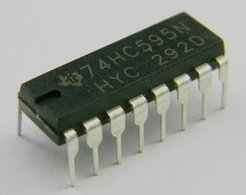
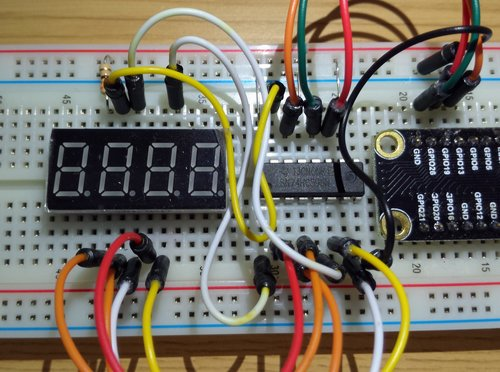
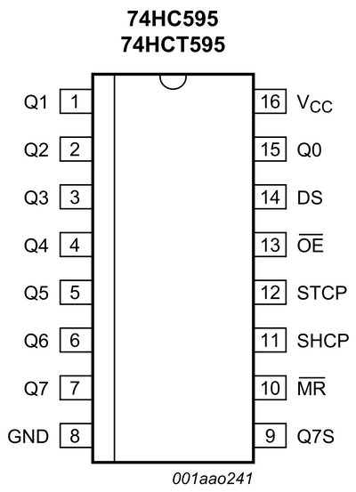
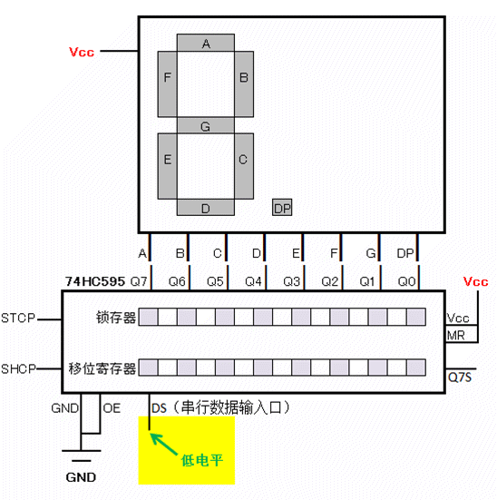

树莓派GPIO入门08-使用74HC595芯片驱动数码管（一）
之前我们学习了如何驱动数码管显示数字。
但是这种做法有两个缺点。
- 需要占用大量IO口，在那篇文章里，我们为了驱动4位数码管一共使用了12个IO口。如果需要驱动8位数码管则至少需要16个IO口。
- 系统资源占用过多。还是在那篇文章里，为了实现数码管的动态扫描显示，需要不停地高速操作IO口，这对单任务的单片机比如51单片机来说问题并不太大，因为单任务的单片机的执行时序是由晶振来决定的，动态扫描的时间间隔可以控制地非常精确，数码管的显示会很稳定，不会出现闪烁的现象。但对于运行着多任务的Linux操作系统的树莓派来说，对IO口的大量反复操作以及大量使用sleep语句会导致CPU占用过多，最后导致动态扫描的间隔时间不均匀，体现为数码管显示不稳定，有明显闪烁的现象。为了改善这个问题我在那篇文章的最后还尝试用c语言来代替python语言，可实际效果有限。
使用GPIO直接驱动数码管时，上面这两个问题是不可避免的。想解决这两个问题，我们需要借助外部芯片的帮助。
接下来我将用几个篇幅来介绍如何使用显示驱动芯片74HC595来驱动数码管的方法。同时我们也可以学习到串行数据传输的方法以及一些数字芯片通用的一些概念，比如时钟引脚，上升沿，锁存，移位寄存等。理解了这些通用的概念对学习使用其他芯片是很有帮助的。
本文最终效果
在一块74HC595芯片的配合下，只需要3个GPIO就能驱动一只8段数码管。（直接用GPIO驱动需要至少8个GPIO口）
视频演示
硬件
- 74HC595显示芯片一只（0.5元一只）
 - 共阳（或共阴）数码管一只
- 限流电阻一只，330欧就够了。

原理说明
先转一段百度百科上74HC595芯片的简介。
74HC595具有8位移位寄存器和一个存储器，三态输出功能。 移位寄存器和存储器有相互独立的时钟。数据在SH_cp（移位寄存器时钟输入）的上升沿输入到移位寄存器中，在ST_cp（存储器时钟输入）的上升沿输入到存储寄存器中去。如果两个时钟连在一起，则移位寄存器总是比存储寄存器早一个脉冲。移位寄存器有一个串行移位输入（Ds），和一个串行输出（Q7’）,和一个异步的低电平复位，存储寄存器有一个并行8位的，具备三态的总线输出，当使能OE时（为低电平），存储寄存器的数据输出到总线。
看不懂吧，没关系，我们先看一下芯片的引脚图：

分别解释一下：
- GND接地，VCC接5V电源，这个就不用说了。
- Q0-Q7这8根引脚是芯片的输出引脚，直接跟数码管的8段引脚相连。对应关系要看你怎么接线和写代码时传送数据的顺序了。
- DS是串行输入引脚，所谓串行就是使数据在一根信号线上按顺序一位一位地传输，就像一串糖葫芦。这个引脚我们接到树莓派任意一个GPIO口上（输出模式）。
- SHCP是移位寄存器的时钟引脚。听上去有点复杂，其实很简单。74HC595内部有一个8位的移位寄存器用来保存从DS引脚输入的数据。那么74HC595怎么知道什么时候该从DS引脚上取数据了呢？正是通过SHCP这个时钟引脚来实现的。只有在SHCP发生一次上升沿的时候，74HC595才会从DS引脚上取得当前的数据（高/低电平）并把取到的这一位数据保存到移位寄存器里。同样的，这个引脚也接到树莓派任意一个GPIO口上。当我们向芯片发送数据时，要先在DS引脚上准备好要传送的数据，然后制造一次SHCP引脚的上升沿（先拉低电平再拉高电平），74HC595会在这个上升沿将DS引脚上的数据存入移位寄存器D0，同时D0原来的数据会顺移到D1，D1的数据位移到D2。。。D6的数据位移到D7。而原先D7的数据已经没有地方储存了，这一位数据会被输出到引脚Q7S上。这个引脚的作用我们下一篇再说，本文暂时用不到这个引脚。（注意这里说的不是输出引脚Q0-Q7，而是指内部的8位移位寄存器里每一个“小房间”，芯片手册上并没有给这些小房间编号，这里为了说明方便进行了编号）
- STCP是芯片内部另外一个8位锁存寄存器的时钟引脚。当移位寄存器的8位数据全部传输完毕后，制造一次锁存器时钟引脚的上升沿（先拉低电平再拉高电平）。74HC595会在这个上升沿将移位寄存器里的8位数据复制到锁存器中（锁存器里原来的数据将被替换）。注意，到这里为止，这8位数据还只是被保存在锁存器里，并没有输出到数码管上。这个引脚同样连接到树莓派任意一个GPIO口上即可。
- OE是输出使能引脚，在其他芯片里也很常见。作用是控制锁存器里的数据是否最终输出到Q0-Q7输出引脚上。低电平时输出，高电平时不输出（既不是高电平，也不是低电平而是高阻态，不通电）。本例为了方便直接接在GND上使其一直保持低电平输出数据。
- MR是用来重置内部寄存器的引脚。低电平时重置内部寄存器(MemoryReset?)。本例为了方便直接连接在Vcc上一直保持高电平。
- Q7S引脚，串行输出引脚，本文不使用，下一篇再解释它的作用。
- 关于锁存器。顾名思义就是将数据保存并锁定。一旦进入了锁存器，除非断电或重置数据（MR口设置为低电平），锁存器的数据不会再改变。好处是，当你需要更新数据时，将数据串行输入移位寄存器的过程中，锁存器里的数据不会有任何影响，也就不会有闪烁了。一直到移位寄存器8位数据准备完毕，再制造一次STCP的上升沿一次性更新锁存器的数据，更新输出。
另外，我做了一个动画帮助你理解整个过程。

硬件连接
| 模块1 | 引脚 | 模块2 | 引脚 |
|---|---|---|---|
| 74HC595 | Q0 | 数码管 | DP |
| 74HC595 | Q1 | 数码管 | G |
| 74HC595 | Q2 | 数码管 | F |
| 74HC595 | Q3 | 数码管 | E |
| 74HC595 | Q4 | 数码管 | D |
| 74HC595 | Q5 | 数码管 | C |
| 74HC595 | Q6 | 数码管 | B |
| 74HC595 | Q7 | 数码管 | A |
| 74HC595 | DS | 树莓派 | GPIO13 |
| 74HC595 | SHCP | 树莓派 | GPIO19 |
| 74HC595 | SHTP | 树莓派 | GPIO26 |
| 74HC595 | VCC,MR | 树莓派 | VCC |
| 74HC595 | GND,OE | 树莓派 | GND |
| 数码管 | 1位共阳极 | 树莓派 | VCC |
注意，共阳数码管的共阳极连接5V电源时要串联一只限流电阻防止数码管电流过大损坏电阻。
如果你用的是共阴极数码管就没关系了，74HC595输出的电流是控制好的可以直接连到阳极上。
我手头上没有单独的1位数码管，就用4位数码管代替了，本文只接通数码管DIG1的共阳极做演示。
代码（Python）
1 | #!/usr/bin/env python |